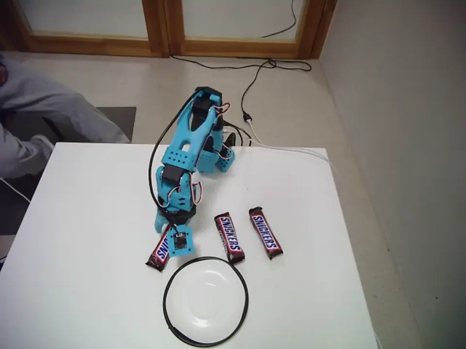
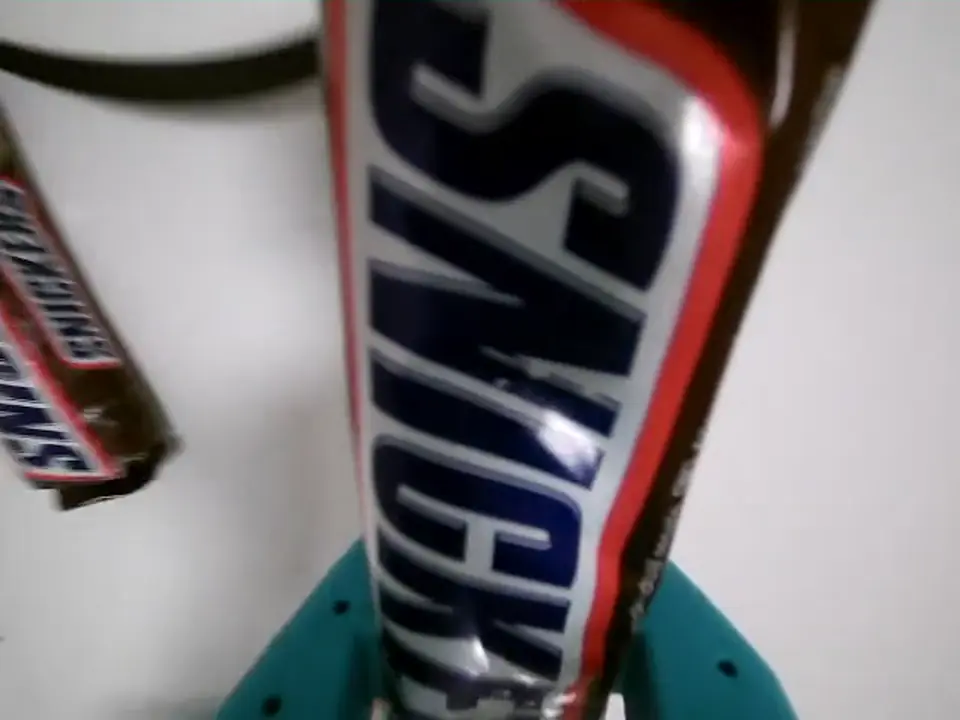
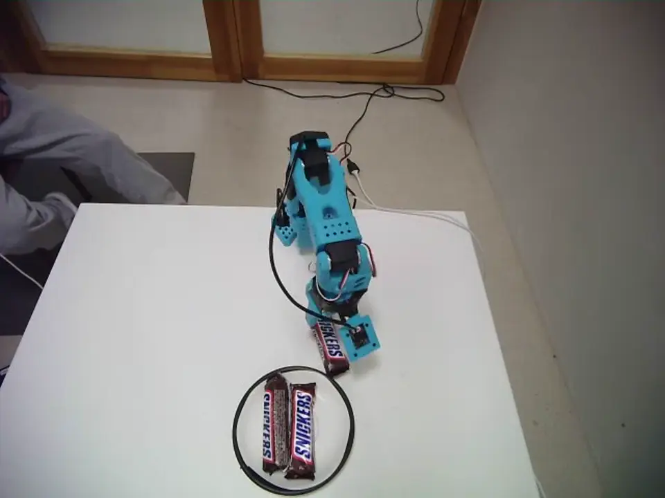
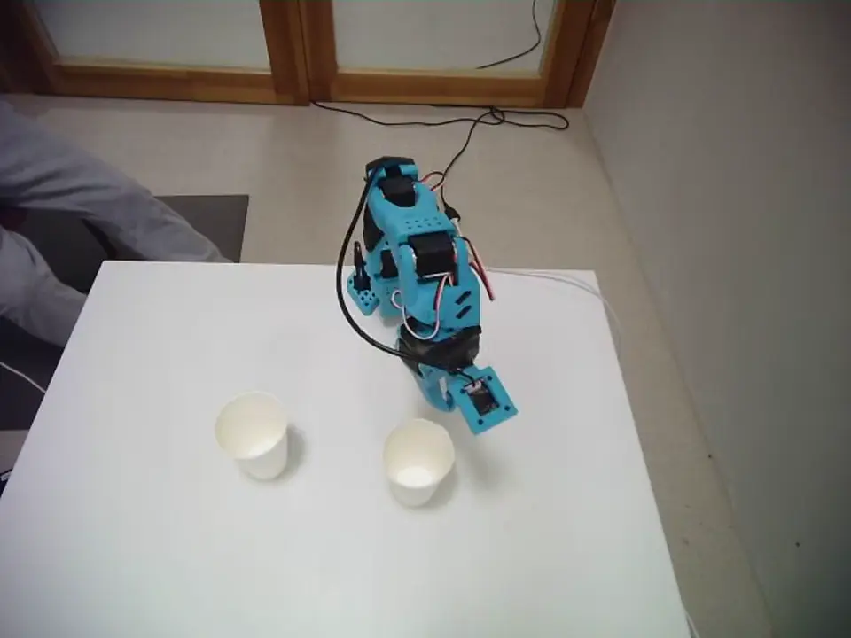
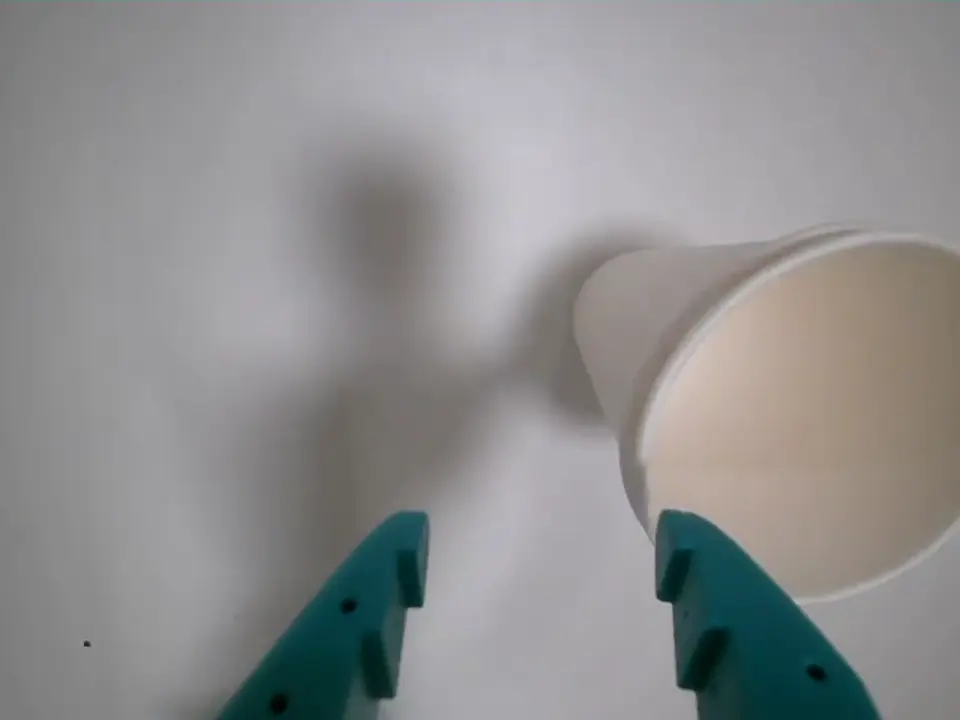
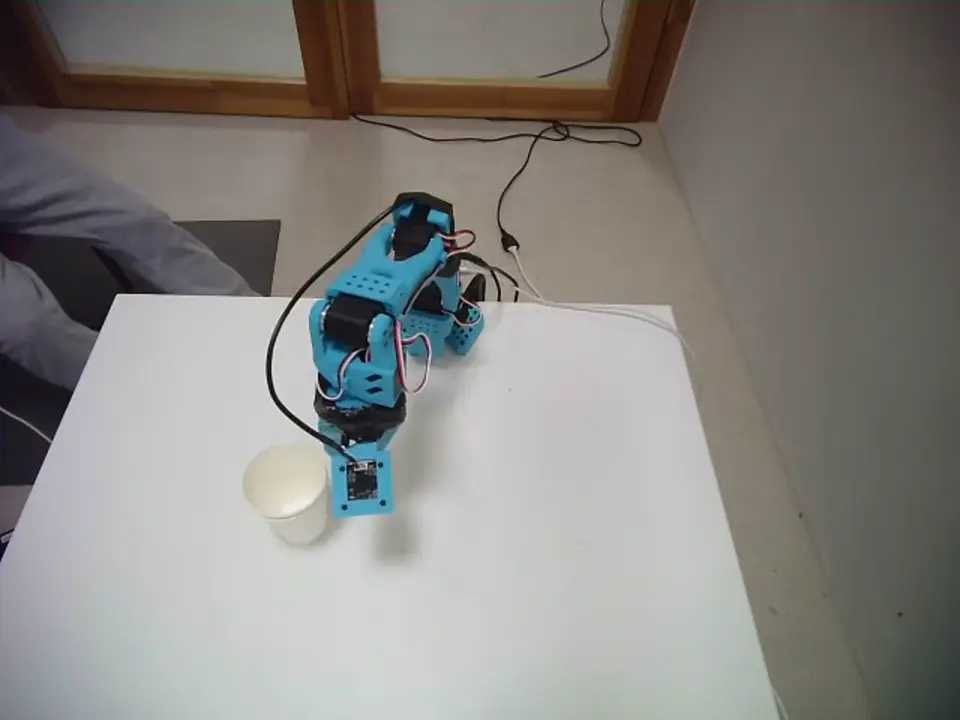

ERH Physical AI Hackathon
Team Trainers placed 2nd in the Imagine, then Act track: 30 hours at DARE campus in Zurich, with Black Forest Labs' FLUX.3 Action model on a physical SO-101.
- Placed
- 2nd in the Imagine, then Act track
- Team
- Team Trainers
- When
- October 17 to 18, 2026
Setup
- Robot
- SO-101 arm
- Cameras
- A scene camera over the table and a wrist camera on the gripper
- Model
- black-forest-labs/flux-3-action-so101, a world action model
- Inference
- Remote, on an NVIDIA H100 through AWS servers
Data
The team collected 100 episodes of stacking paper cups and 100 of placing Snickers bars on a plate, with other objects scattered at random across the table. The working model was trained on these 200 episodes.
The public dataset holds 300 episodes and 255,518 frames in LeRobot v3.0 format at 30 fps, with scene and wrist cameras and 6-DoF state and action. The 200-episode training set is a subset of it.






Training
We first ran the model zero-shot on our arm, then fine-tuned it on the 200 episodes at batch size 2 for 6,000 steps. We compared the checkpoints at 3,000, 4,000 and 6,000 steps on the physical robot, and the 6,000-step checkpoint performed best.
Results
| Task, 6,000-step checkpoint | Trials | Success |
|---|---|---|
| Snickers placement | 8 of 10 | 80% |
| Paper-cup stacking | 5 of 10 | 50% |
Each task was scored on its own trials, not in combined runs.
What limited it
- Zero-shot runsCalibration issues limited the model's zero-shot performance on our arm. The working results above came after fine-tuning on the team's own demonstrations.